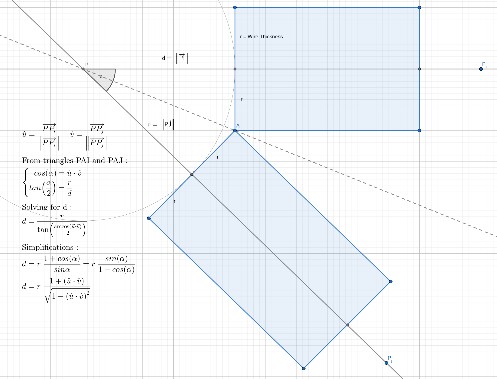
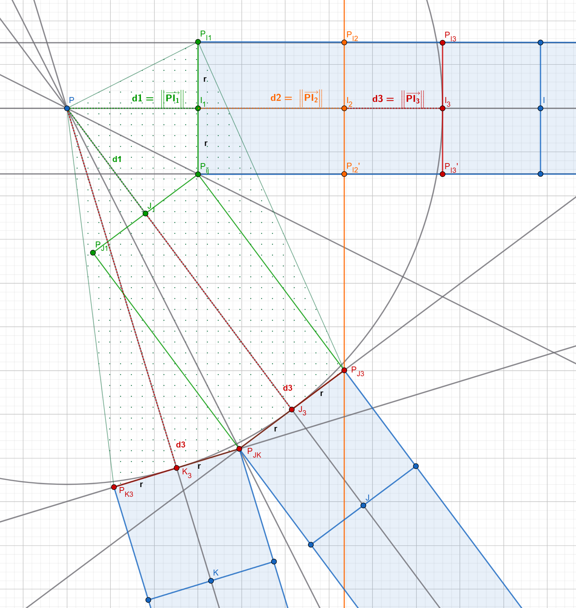

Author: Nelson Defoulny
Category: Personal Projects
Date: 2025
Development Team Size: 1
UE5 Wire Mesh Tool Plugin


Description
The Wire Mesh Tool is a plugin for Unreal Engine 5 that extends the editor modeling toolset. Its purpose is to transform any 3D model into a volumetric wireframe mesh. Instead of relying on simple wireframe rendering, it generates real geometry by replacing every edge of the source mesh with a solid 3D wire.
This approach opens up creative possibilities for:
- Stylized visuals: achieve a clean, technical, or futuristic wireframe look.
- Visualization: highlight the structure of complex models.
- Gameplay & VFX: build holograms, energy grids, sci-fi cages, or unique interactive objects.
Unlike traditional shader-based wireframes, the generated mesh can:
- Cast and receive shadows
- Interact with lights and materials
- Participate in physics and collisions
Whether for artistic expression, technical previews, or gameplay effects, the Wire Mesh Plugin offers a simple way to turn ordinary models into striking geometric designs.
Demo
Gallery


Features
Wire Selection
Use all edges or only polygroup borders as wire sources.

Thickness and Resolution
Full control is given over wire thickness and the number of segments per revolution.
Uniform Joints
The tool supports "uniform" and "smallest" joints. The preferred method is "smallest" as it limits the size of the joints, which is especially important when the mesh has acute angles. Otherwise, the uniform option can be used to increase consistency.


Attributes
The tool supports most mesh attributes including:
- Polygroups: Each individual element has its own polygroup ID. This can be helpful for further mesh modification and to generate UVs.
- Vertex Colors: One color for joints and one color for wires.
- Normals and Tangents: The tool computes normals and tangents by default.
- Materials: One or two material IDs (split joints and wires).


UVs
The tool also computes UVs automatically. Each element (wire/joint) is mapped to a UV island and normalized in range. The tool can optionally arrange elements along a grid.
Thanks to polygroups and default UVs, it is fairly easy to recompute or unwrap UVs using other Unreal Engine tools.


Preview
The tool supports some preview options including:
- Show/Hide source mesh
- Show/Hide wireframe
- Preview modes (output, flat, grey, transparent, attributes, checkerboard)
How it Works
This part exposes the underlying concepts I used to make the tool and is therefore more technical.
Base Concept
The main idea is to leverage convex hulls to join cylinders. This is a fairly simple approach and yet it works pretty well in a lot of cases. There are some important caveats that we will discuss later.
For the rest of the post I will use the following terms:
- Joint: this is the node between cylinders that is constructed from a convex hull
- Wire: this is just one cylinder
- Anchor: this is one circle, one open cap of a wire. Therefore, there are two anchors per wire.
Convex Hull
Before going in depth, it is important to explain why this approach works. Indeed, the whole concept assumes that a bunch of anchors (circles) can belong to a single convex hull. If this hypothesis isn't verified, then some anchor points won't exist in the final joint and it will be impossible to create the associated wire.
Let's start by considering two finite cylinders of radius $ r $ that start at joint location $ P $. Then we can space them out (along their axis) by a distance $ d $ so they don't overlap.

Figure 1 : Wire Pair Distance
Using simple trigonometry (see fig 1) we can find $ d $, which is enough to place:
To place anchor points, we can sample a circle in any orthonormal basis respectively made from $ \hat u $ and $ \hat v $.
However, this solution only works for two cylinders and adding more wires only works for specific configurations. Let's inspect what we have if we consider a problematic setup with 3 wires.

Figure 2 : Convex Hull
Using wire pair distance (see fig 1) gives $ d1 $ from the $ IJ $ pair and $ d3 $ from the $ JK $ pair (see fig 2). The green dot area shows the resulting convex hull. As we can see, $ P_{IJ} $ won't be part of it, therefore excluding wire $ \overrightarrow{PI} $ from the solution.
A more general way of saying this is that anchors at higher distances can surround points from closer anchors, removing them from the convex hull.
Uniform Convex Hull
The uniform convex hull solution is fairly simple and intuitive and is represented in red (see fig 2).
The idea is to use the highest pairwise distance to create our convex hull.
Doing so means that all created anchor points will belong to a sphere of radius :
As part of the same sphere, all anchor points subsequently belong to the same convex hull.
As we can see, the uniform hull contains all anchor points $ P_{I3}, P_{I3}', P_{J3}, P_{JK}, P_{K3} $. However, it is clearly overshooting the problem for $ P_{I3} $ and $ P_{I3}' $, and we can do better.
Smallest Convex Hull
Let's examine the smallest convex hull solution represented in orange (see fig 2).
Compared to the uniform hull, we can get a better solution for $ P_{I3} $ and $ P_{I3}' $ by projecting $ P_{J3} $ on $ (PI) $. To do so, we simply need to compute $ \overrightarrow{PP_{J3}} $ :
To get $ d_2 $, we need to repeat the above computation for all other anchors that have higher distances. In general terms, this means that the distance $ d_i $ of an anchor $ i $ is the maximum of all $ d_{ij} $ for every anchor $ j $ that verifies $ d_j > d_i $.
This statement has multiple important consequences for the implementation. First, as we only care about higher distance anchors, we can skip the most distant one that won't change and process other anchors in descending order. Managing the descending order requires extra care as we need to reconsider shorter anchors every time we change an anchor distance. Therefore, we need to maintain the order and the processing cursor as the values change.
Implementation
In the following sections, we will start looking at the results of the implementation for the corner of a cube.

Convex Hull
Here are the results from the Uniform and Smallest convex hull techniques.


Removing Anchor Faces
The next step is really straightforward. We need to remove the triangles on anchor faces to avoid creating non-manifold geometry with the wires.
There are two easy methods for this that depend on the implementation:
1. Remove all triangles which have their 3 vertices belonging to the same anchor.
2. Add a temporary vertex at the center of each anchor face, remove all triangles that use it, and clean it up.
As you might have guessed from previous results, I am using the first method in this tool.


Adding Wires
The next step is to add wires to our mesh. Wires are just cylinders, and we already have their caps (anchors), so it only requires using anchor vertex indices properly.


Rounding Convex Hull
If we now look at the other side of this cube corner, we can see that for a corner like this one, we have a pretty bad result.
To fix this, we can simply add one additional vertex on the opposite side of each anchor face center. These additional vertices might end up in the convex hull, so the implementation has to handle them accordingly.


Joint Examples
Comparison of hull methods for an acute angle.
Joint at the base of a cylinder.


UVs
The tool also unwraps UVs. There are many different approaches, but for this tool I decided to stick to an easy method. The main idea is that AutoUV tools available can do the job for artistic purposes. Therefore, the default UVs have been thought for technical purposes where deterministic UVs could be a huge thing.
The wires are simply opened and laid out in UV range, so it is a simple conversion from indices to UV coordinates.
I wanted to get one UV island per joint. Therefore, I am using the Tutte Embedding technique with uniform weight. The main idea of this technique is to map one of the anchor faces to a unit disk in UV space. Then it folds all other triangles inside this disk. Finally, there is a relaxation algorithm to spread UV points.
By default, each joint/wire is mapped to the full (0-1) range. Optionally, they can be laid out along a grid.

Attributes
Each joint/wire has its own polygroup. This is mainly here to help modify the mesh with other modeling tools. It also plays a critical role in the behavior of Unreal Engine AutoUV tools.
It also assigns one vertex color for joints and another for wires, which can be helpful for material creation.
The tool also computes normals and tangents of the resulting mesh.
Pros and Cons
The convex hull strategy has a critical issue: it is really fragile to acute angles. As the angle gets smaller, the anchor distances grow rapidly. Therefore, joint size grows rapidly as well, which doesn't work visually and technically.
Nonetheless, the "smallest hull" strategy works on a wider range of mesh topology than the uniform hull and is a decently good solution. The uniform version has been kept as it is visually interesting for some topology.